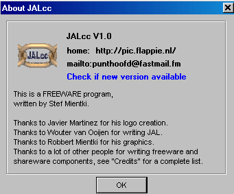
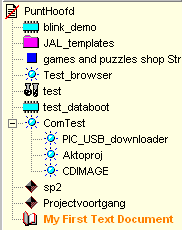
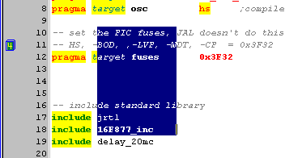
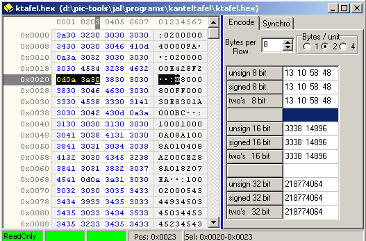

october, 2005
OverView & Credits
|
JALcc, another IDE
This program couldn't have been written (in the limited available time) without the people who made their creations available as freeware or shareware components, thank you all !! |
 |
|
Document List The document list, organizes all your documents, web-links, e-mail addresses, music etc.
|
 |
|
Code Editor based on SynEdit
Suited for any language (special support for JAL), completely configurable by the user.
This editor is missing just one thing: code-folding. |
 |
|
Hex Editor Based on mirkes wonderfull hexeditor component. A lot of beautiful features TMPHexEditor are deliberately left out, to fullfill the KISS principle. Besides attaching the Hex Editor explictly to a document, you can open each document in the document list in the Hex Editor, through the RM-menu. |
 |
Special thanks to
Wouter van Ooijen,(www.voti.nl)
for creating JAL and starting the lively JAL-community.
Javier Martinez,(JAL CODE)
for creating the beatiful JAL-art and maintaining the current JAL-distribution.
Sergey Tkachenko,
for his TRichViewEdit components (www.trichview.com)
and his fast, excellent and persistent support
Boian Mitov
for his AudioLab, VideoLab, SignalLab libraries (Boian Mitov's C++ Builder site - Home)
and his fast, excellent and persistent support
Kyle A. York
for creating PICbsc (Casa de York -- PICbsc)
Sergio Masci
for creating XCSB (XCSB - Structured PIC BASIC)
Michael Vinther
for creating Diagram Designer (MeeSoft)
Thanks to, for the following Freeware/Shareware components
ALL THE PEOPLE WHO CONTRIBUTED TO:TSynEdit
The crue who created ImageMagick: ImageMagick
Igor Pavlov:7-Zip Archiver
Gustavo Daud:PNGimage
Shane Tolmie:BootLoader
Petr Kolomaznik: Uploader Bootloader
Myke Predko: Basic87
Marco Cocco:CPDrv
Anders Melander:TGifImage, Tdrag&drop
Renate Schaaf:Parser10
William Miller:TASGScreenCapture
Accalai Ferruccio:AFQuickMail
Jonathan Bennett & the AutoIt team:AutoIt3
Jordan Russell, Martijn Laan:Inno Setup
Simon Tatham:Putty
Chirag Dalal:TFileOperation
Douglas Tietjen, Slobodan Ratkovic:QTmovie
Kambiz R. Khojasteh:TFindFile, TsysImage
Gennady Makeev, Aleksey Kuznetsov:XJustOne
Carlo Kok:RVhtmlParser
Richard Phillips:ThtmlParser
Kevin Savko:TExecFile
Tim Knipe:Shell Control Pack
The people who build:EurekaLog